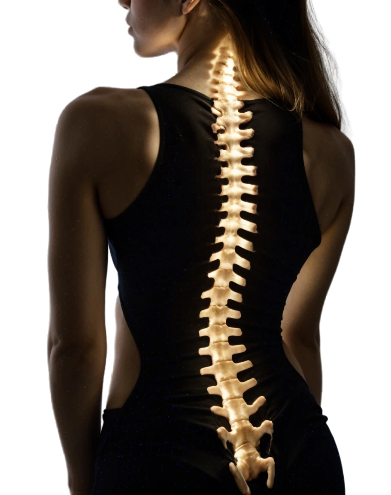
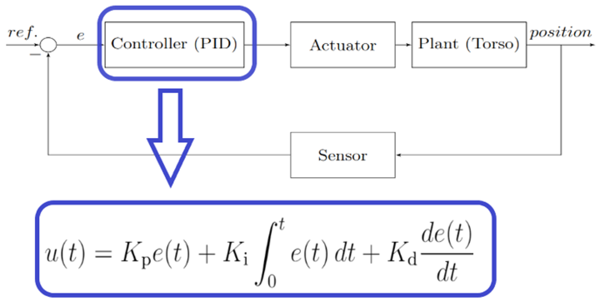

|  |
|  |
The goal of this project was to develop a control system to regulate both force and position when applying vertical pressure to the human spine. Feedback control was achieved using a strain gauge sensor to measure the applied load and a potentiometer to determine the actuator's position. The system receives a desired reference position as input, and the first step is to calculate the error by comparing the reference with the actual position. A PID control algorithm then determines how much the actuator needs to adjust to reach the desired position of the plant (torso). For safety, the feedback control system includes force monitoring to ensure that no excessive force is applied, preventing potential damage to the human spine.
In the figure, you can see the feedback control system setup. The Arduino Uno implements the PID controller, programmed in C language. It controls both the driver and the actuator. The position data, read from the actuator’s potentiometer, is used as feedback to calculate the error and adjust the system accordingly.
During my time at Aarhus University, I completed a course in Control of Mobile Robots, where I developed P, PI, PD, and PID (Proportional Integral Derivative) controllers for a Parrot BEBOP 2 drone in both simulation and laboratory environments. The simulation control was implemented in Python using a Linux and ROS (Robot Operating System) environment. Through this course, I gained extensive experience working with various sensors for feedback loops, including potentiometers, accelerometers and GPS.
As the final project for the Mobile Robots course, we developed a PID controller for a drone. In the video, you can see the science behind tuning the controller's parameters and how they affect the drone's behavior. Once the parameters were optimized, several lab tests were conducted. The video shows the drone being disturbed and quickly following a set of coordinates as efficiently as possible.
This website was build using the themplates find in Free Html Templates in order to practice my programming skills. Some images and text on this website were generated using artificial intelligence tools (AI).